Connection Instruction between Tableau and FusionInsight¶
Succeeded Case¶
Tableau 10.0.0 ↔ FusionInsight HD V100R002C30 (Hive/SparkSQL)
Tableau 10.0.0 ↔ FusionInsight HD V100R002C50 (Hive/SparkSQL)
Tableau 10.1.4 ↔ FusionInsight HD V100R002C60U20 (Hive/SparkSQL)
Tableau 10.3.2 ↔ FusionInsight HD V100R002C70SPC200 (Hive/SparkSQL)
Tableau 10.5.0 ↔ FusionInsight HD V100R002C80SPC100 (Hive/SparkSQL)
Configure the Kerberos on Windows¶
-
Download and install MIT Kerberos from the following URL
http://web.mit.edu/kerberos/dist/#kfw-4.0 -
Make sure the time differences between FusionInsight clusters and Tableau client is no longer than 5 minutes.
-
Configure required Kerberos filesystem
Created a user with "Human-Machine" as its type( For detail, take product documentation as a reference ), grant the Hive privileges to this user. For example, create a user named developuser, download the user.keytab and krb5.conf files on the Tableau client, rename the krb5.conf file into krb5.ini and save it into the following directory C:\ProgramData\MIT\Kerberos5
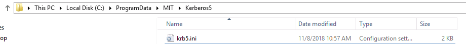
-
Configure Kerberos cache file
-
Create a directory to save the Kerberos cache file, for example,
C:\temp -
Configure the Environment Variables, Variable name is KRB5CCNAME, Variable value is C:\temp\krb5cache

-
restart the Tableau client
-
Start Kerberos Authentication on Windows
-
use the created username and password to log in, the Principal is equal to username@Kerberos Realm name
-
Open MIT Kerberos, click on Get Ticket, and type in the right Principal and Password for authentication

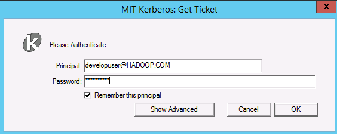
Connecting Tableau to Hive¶
Configure the ODBC interface to connect FusionInsight HiveDriver
- Download and install the ODBC driver
Download URL: http://www.cloudera.com/content/cloudera/en/downloads/connectors/hive/odbc/hive-odbc-v2-5-15.html
and choose the right one depends on the OS and bit version
-
Configure ODBC drivers
Open ODBC Data Sources(64-bit) by searching the keyword ODBC on Windows


click on User DSN tab, click on Add button, choose Cloudera ODBC Driver for Apache Hive and click on Finish to start to configure


In detail: 1: Hive Server 2 2: No Service Discovery 3: 172.21.3.101 4: 21006 5: default 6: Kerberos 7: hadoop.hadoop.com 8: hive 9: SASL
-
click on Test button to test the connection
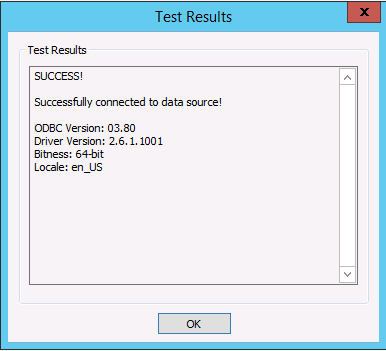
-
Open Tableau
Click on More option, and choose ODBC by search in keyword
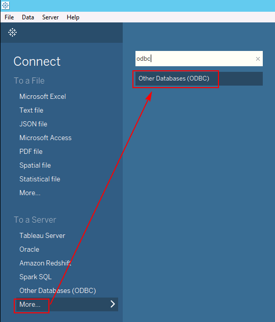
Connection Configuration shown as bellow:

click on Connect and then click on Sign In
-
Search the Data

-
Search the data from multiple tables

Connecting Tableau to Spark¶
- Download and install the ODBC driver for Spark Download urlhttp://www.tableau.com/support/drivers

- Created DSN （Data Source Name）
Open ODBC Data Sources(64-bit)
Click on System DSN tab, click on Add, choose Simba Spark ODBC Driver and click on Finish

- Open the installed Driver directory, for example,
C:\Program Files\Simba Spark ODBC Driver\liband open the DriverConfiguration64.exe to Configure
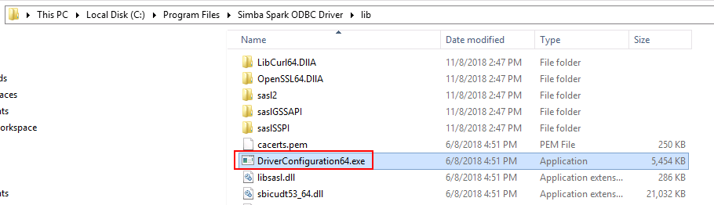
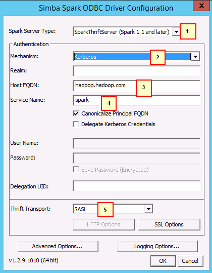
In detail: 1：SparkThriftServer (Spark 1.1 and later) 2: Kerberos 3: hadoop.hadoop.com 4: spark 5: SASL
click on Advanced Options and choose "Driver Config Take Precedence"
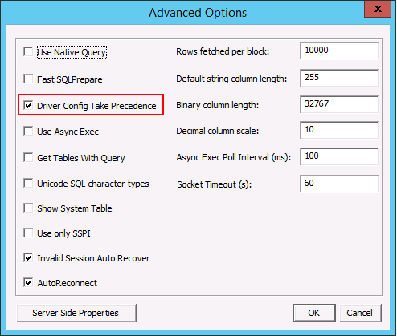
Click on ok to save the configuration
- Open Tableau
Click on More option, and choose Spark SQL by search in keyword
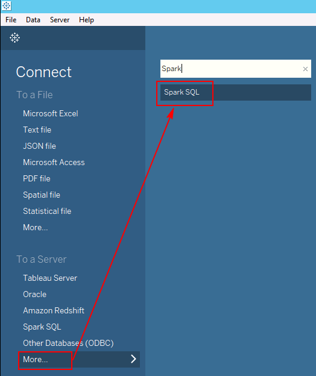
Connection Configuration shown as bellow:
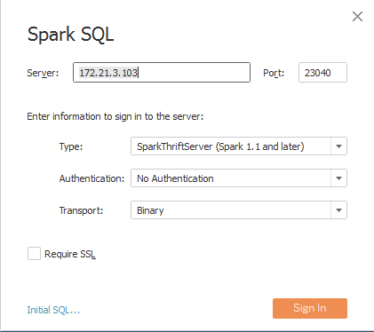
Server info can be got from FusionInsight Manager Web UI

Port info can be got from FusionInsight Manager Web UI as well
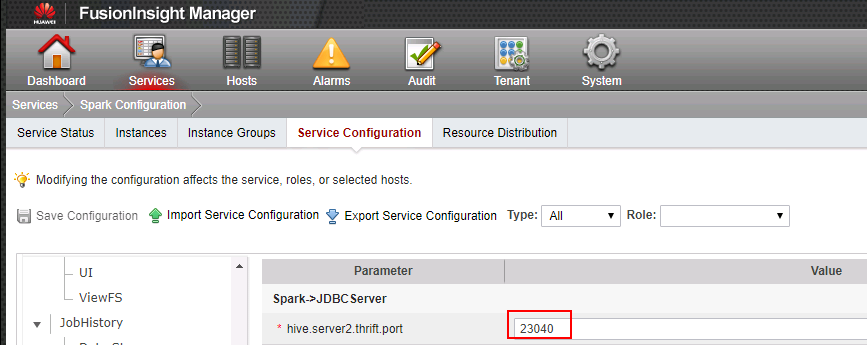
Click on Sign In , to come into a new Page, choose Schema and Table shown as bellow
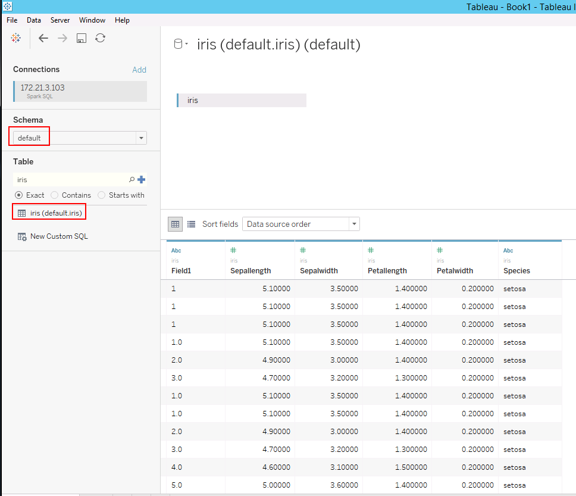
-
Open Sheet to visulize the data

-
Performance test
-
Search the table web_sales which contains millions of records

-
Search the table by multiple tables whose names are store_sales and item


Add customer_address table

Test outcome：

FAQ¶
- Cannot find
C:\ProgramData\MIT\Kerberos5
This Folder is hidden, configure the windows can solve it
- Connection succeeded but permission denied
Use the user who has the privilege to DATABASE